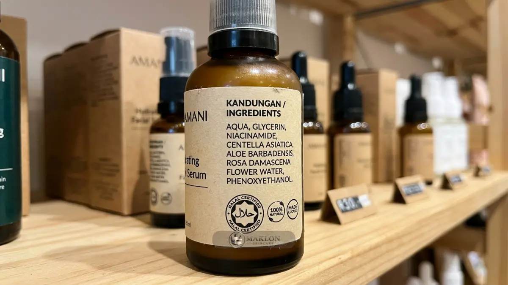

Trend maklon skincare OEM 2026 didorong pasar kosmetik tumbuh, meningkatnya jumlah brand lokal, kewajiban halal, dan konsumen makin selektif terhadap bahan dan klaim.
- Pasar kosmetik Indonesia diproyeksikan melampaui 10 miliar dolar AS pada 2026 menurut Kemenperin.
- Kewajiban halal kosmetik setelah 17 Oktober 2026 mengubah pertimbangan memilih pabrik dan bahan.
- Konsumen cenderung memilih perawatan sederhana, bahan aktif jelas, dan komposisi transparan.
- Persaingan padat dan ketergantungan bahan baku impor menjadi tantangan utama.
Seberapa Besar Potensi Pasar Skincare dan Kosmetik Indonesia pada 2026?
Pasar kosmetik Indonesia diperkirakan melampaui 10 miliar dolar AS pada 2026 menurut proyeksi Kemenperin, sementara jumlah industri kosmetik dalam negeri telah melewati 1.500 unit.
Kemenperin pada Mei 2026 mengutip proyeksi, termasuk dari Statista, bahwa nilai pasar kosmetik Indonesia pada 2026 melebihi 10 miliar dolar AS, dengan pertumbuhan rata-rata di atas 5,5 persen dalam lima tahun ke depan.
Laporan lain mencatat nilai industri kosmetik Indonesia sekitar 9,74 miliar dolar AS pada 2025, dengan proyeksi pertumbuhan tahunan sekitar 4,33 sampai 4,37 persen.
Angka proyeksi berbeda antar lembaga riset, jadi gunakan sebagai gambaran arah tren pertumbuhan, bukan kepastian mutlak.
Nilai ekspor industri kosmetik nasional juga naik dari 417 juta dolar AS pada 2024 menjadi 473,8 juta dolar AS pada 2025, sedangkan jumlah industri kosmetik melewati 1.500 unit pada akhir 2025.
Dari sisi perputaran pendapatan, Kemenperin mencatat kenaikan dari sekitar Rp21,45 triliun pada 2021 menjadi sekitar Rp31,77 triliun pada 2024.
Mengapa Permintaan Maklon Skincare OEM Cenderung Meningkat?
Permintaan maklon skincare OEM cenderung meningkat karena banyak brand baru ingin meluncur cepat tanpa membangun pabrik, sementara maklon menawarkan formulasi, produksi, dan dukungan legalitas.
Dengan jumlah pelaku usaha yang terus bertambah dan mayoritas berskala kecil dan menengah, model produksi kontrak memberi jalan masuk yang lebih terjangkau.
Brand dapat menguji konsep produk dengan volume terbatas, lalu menambah kuantitas produksi setelah pasar merespons positif.
Pabrik maklon juga berperan sebagai mitra pengetahuan: membantu menerjemahkan konsep menjadi formula sediaan, menyesuaikan dengan regulasi BPOM, dan menyiapkan dokumen kepatuhan.
Karena itu, kemampuan pabrik dalam mendampingi legalitas dan sertifikasi halal menjadi nilai tambah utama pada 2026. Langkah memilih pabrik tersedia di panduan maklon skincare OEM terbaik untuk pemula.
Apa Saja Tren Konsumen Skincare 2026 yang Perlu Diperhatikan Brand?
Tren konsumen skincare 2026 umumnya mencakup perawatan sederhana berbasis bahan aktif jelas, perhatian pada skin barrier, perlindungan harian dari matahari, produk halal, dan transparansi komposisi.
Tren berikut merupakan pola umum yang banyak dibahas pelaku industri kecantikan. Gunakan sebagai bahan riset awal, lalu validasi dengan data konsumen brand Anda sendiri.
Rutinitas sederhana dan bahan aktif yang jelas
Konsumen cenderung mencari produk yang menyebutkan konsentrasi bahan aktif dan manfaatnya secara terang benderang. Rutinitas ringkas dengan beberapa produk berfungsi jelas lebih mudah diikuti dibanding rangkaian panjang berlapis-lapis.
Perhatian pada skin barrier
Produk yang menenangkan, memperbaiki sawar kulit, dan menjaga hidrasi alami makin dicari. Bahan seperti ceramide, hyaluronic acid, ectoin, dan centella asiatica banyak diandalkan pada kategori ini.
Perlindungan harian dari matahari
Tabir surya harian dengan tekstur seringan air (watery/gel) sangat relevan untuk iklim tropis Indonesia, didukung hasil uji in-vitro dan in-vivo SPF yang terverifikasi laboratorium.
Transparansi komposisi
Konsumen masa kini makin terbiasa membaca label komposisi bahan (ingredient-literate) dan membandingkan klaim. Brand yang menjelaskan asal usul bahan secara jujur terbukti mendapatkan tingkat loyalitas yang lebih tinggi.

Bagaimana Kewajiban Halal 2026 Mengubah Peta Maklon Skincare?
Kewajiban sertifikat halal untuk kosmetik setelah 17 Oktober 2026 membuat pabrik maklon, bahan baku, dan proses produksi bersertifikat halal menjadi pertimbangan utama brand baru.
BPJPH menegaskan produk kosmetik wajib bersertifikat halal setelah 17 Oktober 2026 berdasarkan PP 42 Tahun 2024, dan pada Mei 2025 sudah ada 81.343 produk kosmetik dalam negeri yang bersertifikat halal resmi.
Bagi brand baru, implikasinya sangat praktis: pilihlah pabrik mitra maklon skincare yang telah tersertifikasi sistem jaminan produk halal, periksa ketertelusuran dokumen bahan sejak tahap sampling, dan masukkan timeline sertifikasi ke jadwal peluncuran.
Dampak langsung regulasi halal terhadap formulasi sediaan dibahas di formulasi maklon skincare OEM dan bahan aktif hero.
Peluang Produk Apa yang Menarik untuk Dikembangkan Melalui Maklon pada 2026?
Peluang produk melalui maklon pada 2026 mencakup serum bahan aktif tunggal, pelembap penguat skin barrier, tabir surya harian, dan perawatan tubuh.
Kategori tersebut selaras dengan tren perilaku konsumen baru. Meski demikian, peluang bukanlah jaminan otomatis dari permintaan.
Validasikan ide produk Anda melalui riset sederhana: survei calon konsumen target, bedah kelemahan produk kompetitor sejenis, dan uji sampel formulasi dalam lingkaran kecil.
Pilihlah satu kategori produk dengan pembeda yang kuat. Bandingkan skema produksi di keunggulan maklon skincare OEM dan perbandingan skema, lalu hitung kelayakan bisnisnya lewat biaya maklon skincare OEM dan margin profit.
Apa Tantangan Pasar yang Perlu Diantisipasi?
Tantangan pasar skincare 2026 mencakup persaingan merek yang padat, ketergantungan bahan baku impor sekitar 80 persen, kepatuhan regulasi, dan tekanan biaya pemasaran digital.
Kemenperin menyebut bahan baku kosmetik masih didominasi impor hingga sekitar 80 persen, sehingga fluktuasi kurs mata uang dan rantai pasok global dapat memengaruhi harga pokok produksi sewaktu-waktu.
Tingkat persaingan juga semakin ketat seiring jumlah industri kosmetik yang melampaui 1.500 unit.
Langkah antisipasinya: bangunlah diferensiasi cerita merek yang autentik, diskusikan formula alternatif bersama pihak formulator pabrik, siapkan berkas notifikasi BPOM dan sertifikat Halal jauh-jauh hari, serta disiplin menyisihkan anggaran iklan berbayar sejak tahap perencanaan awal.
Bagaimana Strategi Brand Baru Memanfaatkan Tren Ini?
Brand baru memanfaatkan tren dengan memilih satu segmen konsumen, membangun produk andalan berbahan aktif jelas, memastikan legalitas dan halal sejak awal, lalu menguji pasar.
- Pilih satu segmen konsumen spesifik dan satu keluhan masalah kulit yang ingin diselesaikan secara tuntas.
- Kembangkan 1 produk andalan (hero SKU) dengan dukungan bahan aktif hero yang jelas manfaat dan klaimnya.
- Pilih pabrik berizin CPKB resmi yang siap mendampingi perolehan notifikasi BPOM dan sertifikasi halal.
- Jalankan produksi batch kecil secara bertahap, himpun testimoni nyata pengguna, lalu perluas saluran distribusi.
- Komunikasikan transparansi bahan dan cara pemakaian produk secara jujur melalui konten edukatif.
Rancang Strategi Brand Skincare 2026 Anda
Trend maklon skincare OEM 2026 menunjukkan pasar kosmetik yang terus tumbuh pesat dengan persaingan yang kian padat, sehingga brand baru wajib memiliki pembeda jelas, legalitas BPOM & Halal sejak dini, dan eksekusi pemasaran yang disiplin.
Gunakan data potensi pasar sebagai panduan arah, validasi langsung kepada target audiens Anda, dan pilih skema maklon yang selaras dengan kapasitas anggaran bisnis Anda.
Siap merancang strategi brand skincare unggulan 2026? Diskusikan ide produk dan konsep brand Anda bersama tim konsultan maklon kami melalui WhatsApp Konsultasi Maklon Skincare hari ini.